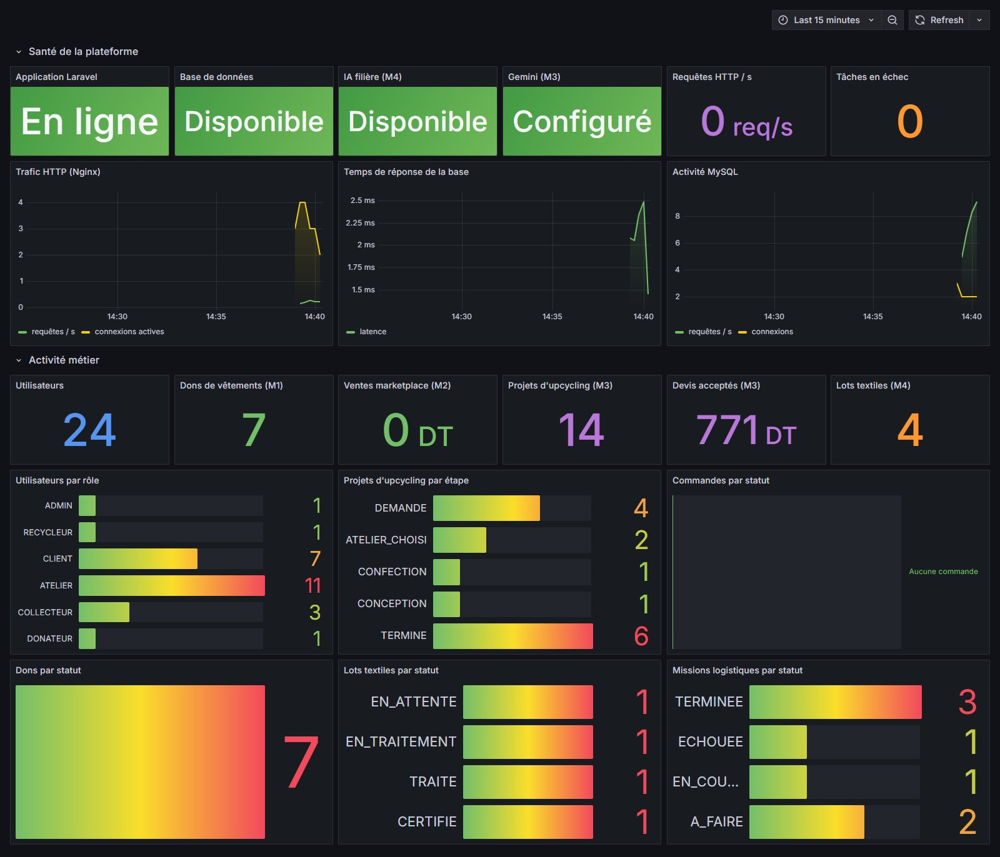
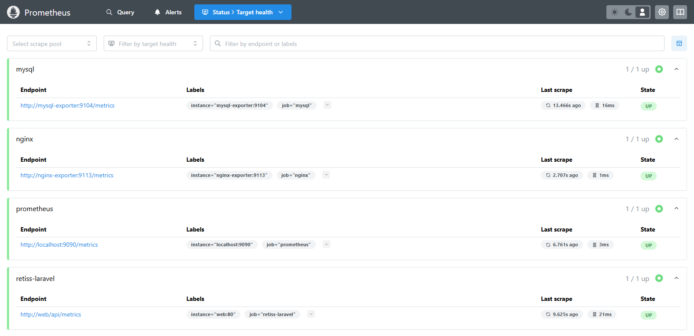
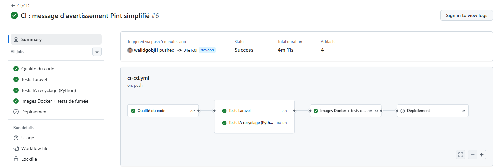
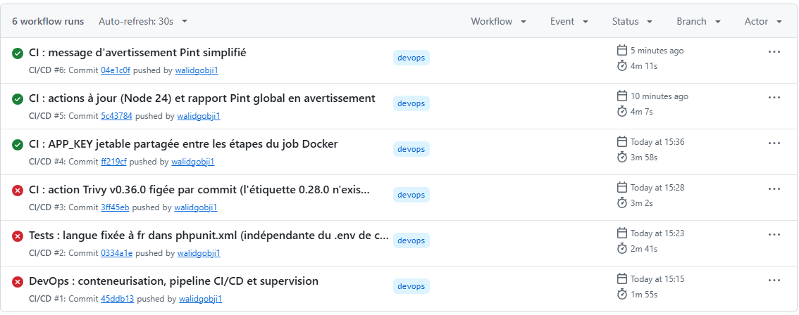

RETISS
Plateforme d’économie circulaire du textile (collecte, marketplace, upcycling, recyclage, logistique). Ce dossier présente la démarche DevOps appliquée au projet : le cycle suivi par l’équipe, le pipeline automatisé qui mène une modification du poste du développeur jusqu’au serveur, l’architecture conteneurisée et la supervision de la plateforme en fonctionnement.
M2 Marketplace — Yahya
M3 Upcycling — Walid
M4 Recyclage — Ala (intégration)
M5 Administration et logistique — Imem
DateNovembre 2026
1. Le processus DevOps du projet
Le projet suit la boucle DevOps classique en huit phases. La partie Dev (planifier, coder, construire, tester) se déroule sur le poste de chaque membre et dans l’intégration continue ; la partie Ops (livrer, déployer, exploiter, superviser) est automatisée par le pipeline et les conteneurs. Les informations de supervision reviennent alimenter la planification : c’est ce retour qui ferme la boucle.
| Phase | Pratique dans le projet |
|---|---|
| Planifier | Découpage en 5 modules (M1 à M5) d’après la grille de validation ; chaque membre est responsable d’un module et de sa branche. |
| Coder | Laravel 12 et PHP 8.4, micro-service IA en Python (FastAPI). Le code est poussé sur la branche du membre puis intégré par fusion dans integration. |
| Construire | Installation reproductible des dépendances (composer.lock) ; trois images Docker construites à partir d’un même Dockerfile multi-étapes. |
| Tester | 360 tests PHPUnit, tests unitaires du modèle IA, contrôle de style Pint, tests de fumée sur la pile complète, scan de vulnérabilités Trivy. |
| Livrer | Chaque version validée est publiée sur GitHub Container Registry, étiquetée par l’identifiant du commit : la même image passe des tests à la production. |
| Déployer | Le serveur télécharge les nouvelles images et redémarre la pile (docker compose pull puis up -d), puis une vérification HTTP confirme le déploiement. |
| Exploiter | Conteneurs avec contrôles de santé et redémarrage automatique ; migrations appliquées au démarrage ; file de tâches dans un conteneur dédié. |
| Superviser | Prometheus collecte les métriques de Laravel, Nginx et MySQL ; Grafana les affiche ; six règles d’alerte détectent les pannes. |
2. Organisation Git de l’équipe
Chaque membre développe son module sur sa propre branche. Les branches sont fusionnées (fusion sans
avance rapide, pour garder l’historique de chaque module) dans integration, où la CI valide l’ensemble.
La branche main reçoit la version finale : c’est elle qui déclenche le déploiement.
Règles appliquées : aucun secret dans le dépôt (le fichier .env est ignoré, .env.example ne contient que des valeurs d’exemple) ; une branche n’est fusionnée dans integration que si les tests passent ; les conflits sont résolus en conservant le travail des deux modules.
3. Pipeline : du développement à la CI puis au CD
Le pipeline est défini dans .github/workflows/ci-cd.yml et s’exécute sur GitHub Actions à chaque
push et à chaque pull request. Une étape ne démarre que si la précédente a réussi : une erreur
arrête le pipeline et le membre concerné est notifié par GitHub.
Détail des étapes du pipeline
| Étape | Ce qui est vérifié ou produit | Bloquante |
|---|---|---|
| ① Qualité | composer validate, syntaxe de tous les fichiers PHP, style Pint sur les fichiers modifiés ; Pint sur tout le projet et composer audit à titre informatif. | oui |
| ② Tests Laravel | 360 tests PHPUnit sur SQLite en mémoire (modules M1 à M5, API, sécurité, rôles) ; rapport JUnit archivé. | oui |
| ② Tests IA | Entraînement du modèle de recyclage puis tests unitaires Python, en parallèle des tests Laravel. | oui |
| ③ Build | Images app (PHP-FPM), web (Nginx) et ai (FastAPI), avec cache des couches entre deux exécutions. | oui |
| ④ Tests de fumée | Démarrage de toute la pile (MySQL compris), puis 11 contrôles : pages publiques, redirection sans session, connexion d’un compte et redirection selon son rôle, accès protégé aux métriques, base et IA joignables. | oui |
| ⑤ Sécurité | Scan Trivy de l’image applicative (vulnérabilités élevées et critiques corrigeables). | non (rapport) |
| ⑥ Publication | Images poussées sur GHCR avec deux étiquettes : l’identifiant du commit et le nom de la branche. | — |
| ⑦ Approbation | Environnement GitHub production : un membre peut exiger une validation manuelle avant le déploiement. | — |
| ⑧ Déploiement | Copie de la configuration, docker compose pull puis up -d --wait sur le serveur ; migrations automatiques au démarrage. | — |
| ⑨ Vérification | Requêtes HTTP sur l’application déployée ; l’échec rend le déploiement rouge dans GitHub. | — |
Pour garder le pipeline vert sans bloquer l’équipe sur le code déjà écrit, le contrôle de style n’est bloquant que sur les fichiers modifiés par le commit. Les secrets de déploiement (hôte, clé SSH) sont stockés dans les secrets GitHub ; la CI génère une clé d’application jetable pour ses tests.
Extrait du workflow GitHub Actions
on:
push: { branches: [main, integration, ala, devops] }
pull_request: { branches: [main, integration, ala] }
jobs:
qualite: # ① composer validate, php -l, Pint
tests-laravel: # ② php artisan test needs: qualite
tests-ia: # ② python -m unittest needs: qualite
docker: # ③ build ④ smoke.sh ⑤ Trivy ⑥ push GHCR
needs: [tests-laravel, tests-ia]
deploiement: # ⑦ approbation ⑧ SSH + compose ⑨ vérification
needs: docker
if: github.ref_name == 'main' && vars.DEPLOY_ENABLED == 'true'
environment: production
Hébergement : la mise en ligne est prévue sur Railway, qui exécute directement les images Docker du projet (application, base MySQL gérée, service IA en réseau privé). Elle est assurée par Ala, responsable de l’intégration ; les étapes ⑦ à ⑨ seront alors branchées sur Railway. D’ici là, le job de déploiement reste désactivé et le pipeline s’arrête après la livraison des images.
4. Architecture d’exécution (conteneurs)
L’application tourne dans six conteneurs décrits par docker-compose.yml. Seul Nginx est exposé :
PHP-FPM, MySQL et le service IA ne sont accessibles que sur le réseau interne. Le profil
monitoring ajoute quatre conteneurs de supervision.
| Image | Construction | Taille |
|---|---|---|
retiss-app | Étape Composer (dépendances sans outils de dev) puis PHP 8.4-FPM Alpine, extensions, OPcache. Au démarrage : attente de MySQL, migrations, données de démonstration si la base est vide, mise en cache de la configuration. | 315 Mo |
retiss-web | Nginx 1.27 Alpine avec les fichiers publics, compression, en-têtes de sécurité et cache des fichiers statiques. | 74 Mo |
retiss-ai | Python 3.12 ; le modèle est entraîné et testé pendant la construction : une image qui échoue aux tests n’est jamais produite. Exécution sans droits root. | 801 Mo |
5. Supervision
Laravel expose /api/metrics au format Prometheus (accès protégé par jeton). On y trouve la santé
technique (base de données, latence, IA, tâches en attente ou en échec) et des indicateurs métier par module :
utilisateurs par rôle, dons, articles, commandes, projets d’upcycling, devis, lots textiles et missions.


| Alerte | Condition |
|---|---|
| ApplicationInjoignable | Laravel ne répond plus à Prometheus pendant 1 minute |
| BaseDeDonneesIndisponible | La base ne répond plus à Laravel pendant 30 secondes |
| BaseDeDonneesLente | Latence de la base supérieure à 0,5 s pendant 2 minutes |
| IARecyclageIndisponible | Le micro-service IA du module M4 ne répond plus pendant 2 minutes |
| TachesEnEchec | Des tâches de la file Laravel sont en échec depuis 5 minutes |
| ExporteurNginxArrete | Les métriques du serveur web ne sont plus collectées pendant 1 minute |
6. Le pipeline en exécution sur GitHub
Le pipeline tourne sur le dépôt de l’équipe (ala-BD/Esprit_5TWIN1_CodeCraft2, onglet Actions).
GitHub affiche les jobs sous forme de graphe : les tests Laravel et les tests IA s’exécutent en parallèle,
le job Docker attend qu’ils réussissent tous les deux, et le déploiement attend le job Docker.

Ce que la CI a détecté dès ses premières exécutions
Les premières exécutions ont échoué, et c’est le rôle attendu d’une CI : chaque échec a révélé un problème réel, invisible sur les postes des développeurs, corrigé avant d’arriver dans la branche d’intégration.
| N° | Étape en échec | Cause détectée | Correction |
|---|---|---|---|
| #1 | ② Tests Laravel | 1 test sur 362 dépendait de la langue configurée dans le .env de chaque développeur : il passait en local (français) et échouait sur un environnement neuf (anglais). | Langue des tests fixée dans phpunit.xml. |
| #2 | ③ Build (préparation) | La version 0.28.0 de l’action de scan Trivy avait été retirée de GitHub. | Version 0.36.0, figée par l’identifiant de son commit (protection contre une modification de l’action). |
| #3 | Arrêt de la pile | La clé d’application jetable n’existait que dans l’étape de démarrage ; Compose refusait de s’exécuter sans elle à l’arrêt. | Clé partagée entre les étapes et masquée dans les journaux. |
| #4 à #6 | — | Pipeline complet au vert. | Actions mises à jour (Node 24), rapport de style global en simple avertissement. |

7. Résultats obtenus
$ docker compose up -d --build --wait Container retiss-db-1 Healthy Container retiss-ai-1 Healthy Container retiss-app-1 Healthy Container retiss-web-1 Healthy $ bash devops/ci/smoke.sh http://localhost:8088 == Tests de fumée sur http://localhost:8088 [OK] GET / -> 200 [OK] GET /login -> 200 [OK] GET /register -> 200 [OK] GET /forgot-password -> 200 [OK] GET /nginx-health -> 200 [OK] GET /dashboard sans session -> 302 [OK] connexion admin -> http://localhost:8088/admin/users [OK] GET /admin/users connecté -> 200 [OK] GET /api/metrics sans jeton -> 401 [OK] métrique 'retiss_base_disponible 1' [OK] métrique 'retiss_ia_recyclage_disponible 1' == Tous les tests de fumée sont passés
Problèmes détectés grâce à la démarche
- Données de démonstration incomplètes en conteneur : les seeders utilisaient Faker, absent de l’image de production. Le conteneur redémarrait sans erreur visible ; le contrôle de santé l’a signalé. Faker a été déplacé dans les dépendances de production.
- Tests échouant après l’intégration : la fabrique d’utilisateurs ne fixait pas le rôle, ce qui faisait refuser l’accès par le middleware des rôles. Corrigé dans la fabrique, détecté par la suite de tests lancée à l’intégration.
- Problèmes révélés par la CI : dépendance d’un test à la configuration locale, action GitHub retirée, variable perdue entre deux étapes (détail en section 6).
- Vulnérabilité de dépendance :
composer auditsignale un avis de sécurité sursymfony/mime, suivi dans le pipeline.
Lancer le projet
cp .env.example .env && php artisan key:generate # clé locale, jamais versionnée docker compose up -d --build --wait # application http://localhost:8088 docker compose --profile monitoring up -d # Grafana http://localhost:3000 bash devops/ci/smoke.sh # vérification
La documentation complète (variables, activation du déploiement, dépannage) se trouve dans docs/devops/README.md.